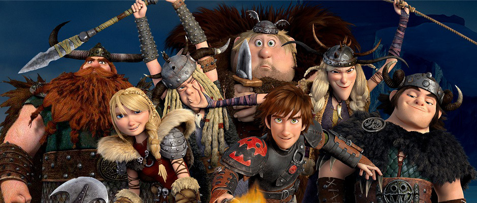

Na ilha de Berk, os vikings dedicam a vida a combater e matar dragões. Soluço (Jay Baruchel), filho do chefe Stoico (Gerard Butler), não é diferente. Ele sonha em matar um dragão e provar seu valor ao pai, apesar da descrença geral. Um dia, por acaso, ele acerta um dragão que jamais foi visto, chamado Fúria da Noite.

Depois de convencer o seu vilarejo que os dragões não devem ser combatidos, Soluço convive com seu dragão Banguela, último da espécie Fúria da Noite. Estes animais passaram a integrar pacificamente a rotina dos moradores da ilha de Berk.
Em Como Treinar o Seu Dragão 3 há um novo cenário no reino de Berk. Graças à amizade entre Soluço, o príncipe instado a assumir a liderança de seu povo, e Banguela, o Fúria da Noite que se torna o melhor amigo e fiel escudeiro do herdeiro, há uma integração total entre raças antes rivais de morte.
Os dragões da Classe Brasa são cuspidores de fogo impetuosos. Esta classe inclui dragões que podem colocar fogo em si mesmos, como na maioria das espécies de dragões menores. Quando um dragão da Classe Brasa começa a perder seu fogo, é um sinal de que ele está morto, apesar de que suas chamas podem ser acessas pelo veneno de uma Rainha Lagarta de Fogo ou pelo seu Gel-de-Pesadelo-Monstruoso.
Os dragões da Classe Rocha (mais conhecida como Classe Boulder) são robustos e estão ligados à terra. Eles podem comer pedras e, apesar de terem asas pequenas em relação ao corpo, são capazes de voar tão rápido e tão alto quanto a maioria dos dragões.
A Classe Rastreadora é uma nova classe em Dragões: Corrida Até o Limite. Mas essa classe pode também receber o nome de Classe Pavor, cujo nome é mencionado em: O livro dos Dragões episódio de uma mini serie oficial de Como Treinar Seu Dragão, disponível na Netflix e em outras plataformas de Straming.
Os dragões da Classe Afiada (mais conhecida como Classe Sharp) são convencidos, vaidosos, orgulhosos e todos eles possuem partes afiadas no corpo./p>
Os dragões da Classe Marinha vivem no oceano ou perto dele e, ao contrário de muitos dragões, eles não cospem fogo como seus ataques à distância e, apesar de muito poucos conseguirem, eles raramente o usam. Os dragões nessa classe são geralmente maiores que os das outras classes. Soluço também disse que um dragão da Classe Marinha não poderia ficar fora da água por muito tempo, mas isso é falso para alguns desses dragões aquáticos.
Os dragões da Classe Relâmpago são distinguidos pela velocidade incrível, mandíbula forte e extrema inteligência, assim como alta precisão, ataques poderosos, e uma habilidade única que permite que naveguem em seus ambientes/atmosfera respectivos. Os dragões nessa classe são alguns dos dragões mais raros, alguns ameaçados de extinção (Fúria da Noite por exemplo). Eles também são os mais difíceis de treinar, porém os mais leais quando treinados.
Pouco se sabe sobre os dragões da Classe Mistério devido ao quão furtivos e sorrateiros eles são. Os dragões nessa classe são geralmente mais temidos que aqueles em outras classes de dragão.